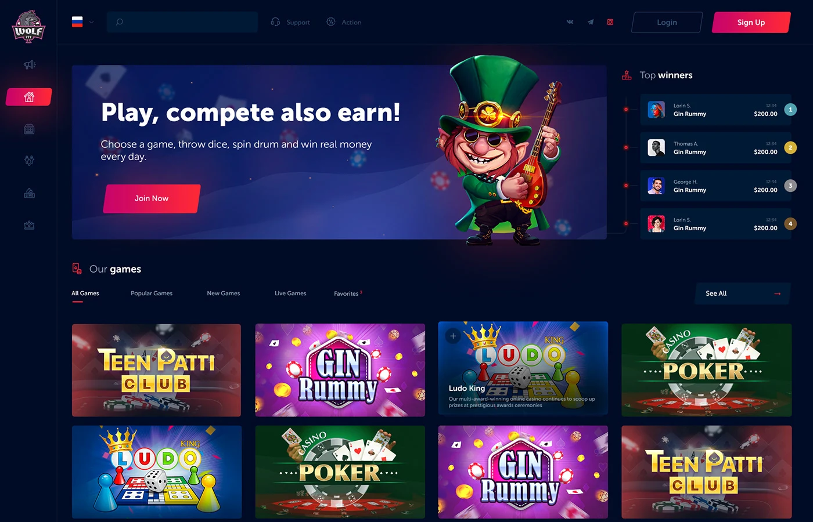

I am a web developer based in Uzbekistan creating awesome and
effective visual identities for companies of all sizes around the
globe. Let's start scrolling and learn more about me.
Download CV

Space One
Web Developer
Greetings to the world of web development!
My name is Jamshid, and I am a young and ambitious web programmer with three years of experience in this exciting field. I was born on 07.09.2006, and I am only 17 years old. Despite my young age, I am proud to already be a FullStack Junior developer.
My journey in web development started at an early age, and in a short time I have mastered various aspects of the field. My experience includes working with frontend technologies such as HTML, CSS, and JavaScript, as well as backend tools including Node.js and databases.
What makes me unique is that in addition to my skills in web development, I also have a passion for graphic arts. My hobby in graphic arts gives me the ability to approach web design from a creative perspective, making my projects not only functional but also visually appealing.
My FullStack Junior level emphasizes my willingness and desire to grow in this field. I am open to new projects where I can apply my knowledge and creativity to build amazing web applications.
I look forward to contributing to the world of web development and continuing my exciting journey in this dynamic and innovative community.
Starting in 2020, I started to study web programming on my own. Over the past two years, I have been actively practicing in this field, successfully putting my knowledge into practice. My experience includes working on projects spanning over 60 websites of various types.
In my work, I have demonstrated expertise in utilizing a variety of technologies including HTML, CSS, JavaScript, React, Next.js, Node.js, PHP, and MySQL. These tools have not only become an integral part of my creative process, but have also allowed me to effectively solve a variety of web development challenges.
An additional step in my professional development was my training in web programming at the DATA Training Center. The training program was intensive and long - 6 months. During the training program I deepened my knowledge and gained valuable practical experience, which I successfully apply in my current work.
All these stages of my career in web programming have made me a specialist capable of solving complex problems, creating quality websites and interacting effectively with various technologies. I am ready for new challenges and continuous professional growth.
#Skills
HTML
CSS
JS
React
Next
Node.js
PHP
MySQL
PostgresSQL

Project Name
Project Name
Project Name
Project Name
Project Name
Project Name